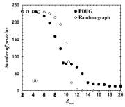

86. Expanding protein universe and its origin from the biological big bang
Boris Shakhnovich[1], Nikolay V. Dokholyan[2], and Eugene I. Shakhnovich[3]
Keywords: molecular evolution, structure comparison, power law behavior
1 Introduction
The bottom-up approach to understanding the evolution of organisms is by studying molecular evolution. With the large number of protein structures identified in the past decades, we have discovered peculiar patterns that nature imprints on protein structural space in the course of evolution. In particular, we have discovered that the universe of protein structures is organized hierarchically into a scale-free network. By understanding the cause of these patterns, we attempt to glance at the very origin of life.
2 Methods and results
We study the properties of the largest cluster of the Protein domain universe graph (PDUG) as a function of cutoff similarity score Zmin. For control, we compare the properties of the largest PDUG cluster to that of random graphs that have the same number of nodes and edges as PDUG and the same distribution of pairwise Z-scores, but where edges are connected randomly. First, we compute the size of a largest cluster as a function of Zmin. We find the sharp transition of the size of the largest cluster at Zmin = Zc ~ 9 Fig 2. Random graphs feature similar transition, but at a higher value of Zmin ~ 11 Fig2. The distribution of cluster sizes depends significantly on whether Zmin > Zc or Zmin < Zc for PDUG and for random graphs. We also find that the probability distribution P(M) of cluster sizes M for both PDUG and random graphs follows a power-law at their respective Z_c: P(M) ~ M2.5. The observed power-law behavior of P(M) is, however, a consequence of criticality at Z_c as it is featured prominently both for PDUG and random clusters. It is a generic percolation phenomenon that has been observed and explained in percolation and in the random graph theories.
In order to characterize the structural properties of the PDUG we measure the probability distribution P(k) of the number of edges per node k taken at Zmin=Zc for individual clusters. It is known that P(k) distinguishes random graphs from various graphs observed in science and technology. Specifically, many known graphs, such as WWW and scientific collaboration networks are scale-free: P(k) ~ ka. In a number of studied cases a~ 3. In drastic contrast with equivalent random graph, PDUG is scale-free with P(k)~k-1.6 with high degree of statistical significance
p-value<10-8 Fig 3 a). As expected, PDUG is a scale-free graph only at Zmin~Z_c, while above and below Zc PDUGs are trivial graphs (one large cluster and a few orphans below Z_c and mostly orphans above Zc. Importantly, the random graph is not scale-free at any value of Zmin (Fig 3b).
Our new rigorous method of clustering protein structures provides a number of insights. Firstly, we discovered that PDUG is by far non-random, but rather represents a scale-free network. Secondly, we show that such a unique property can be quantitatively explained from a divergent evolution prospective, giving support to the view that all proteins might have evolved from a few precursors. It follows that the observed non-uniform distribution of protein folds is a ``random'' consequence of the genesis of proteins by a divergent evolution mechanism, rather than the unequal designability of protein folds.
3 Figures and tables
Fig 1 An example of large cluster of TIM-barrel fold protein domains. Protein domains whose DALI similarity Z-score is greater than Zmin = 9 are connected by lines.

Fig 2. The dependence of the number of proteins in the maximal cluster on the threshold value of Z-score for PDUG and random graphs.

Fig 3. Distribution of node connectivity for PDUG (a) for random graph (b). Node connectivity denotes how many proteins is a given protein structurally similar to.
References
Barabasi, A. L. and R. Albert (1999). "Emergence of scaling in random networks." Science 286(5439): 509-12.
Bollobas, B. (1985). Random Graphs. London, Academic Press.
Dietmann, S., J. Park, et al. (2001). "A fully automatic evolutionary classification of protein folds: Dali Domain Dictionary version 3." Nucleic Acids Res 29(1): 55-7.
Holm, L. and C. Sander (1993). "Protein structure comparison by alignment of distance matrices." J Mol Biol 233(1): 123-38.
Qian, J., N. M. Luscombe, et al. (2001). "Protein family and fold occurrence in genomes: power-law behaviour and evolutionary model." J Mol Biol 313(4): 673-81.
Todd, A. E., C. A. Orengo, et al. (2001). "Evolution of function in protein superfamilies, from a structural perspective." J Mol Biol 307(4): 1113-43.